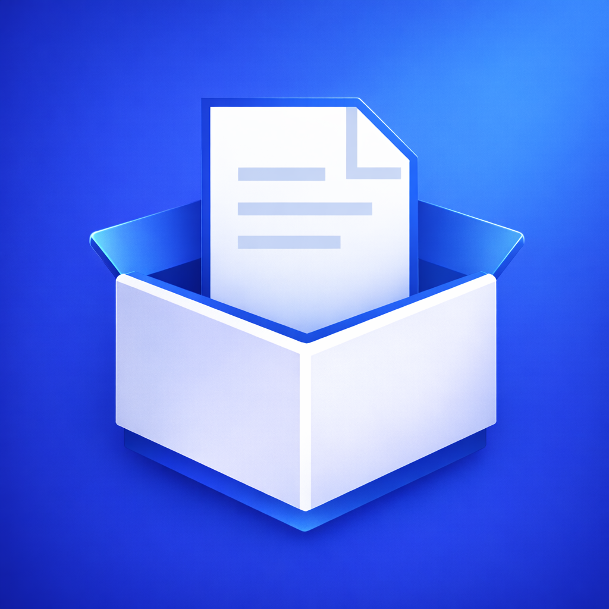

MyDocuBox
Organisiere, sichere und finde deine Dokumente in Sekunden – 100% privat. 100% unter deiner Kontrolle.
Keine Datensammlung. Kein Tracking. Kein Profiling.

Kostenlos testen – Upgrade jederzeit möglich.

Organisiere, sichere und finde deine Dokumente in Sekunden – 100% privat. 100% unter deiner Kontrolle.
Keine Datensammlung. Kein Tracking. Kein Profiling.
Kostenlos testen – Upgrade jederzeit möglich.
Beim Scannen erkennt MyDocuBox automatisch relevante Inhalte und schlägt passende Dateinamen sowie Kategorien vor.
Die Analyse erfolgt vollständig offline – deine Dokumente verlassen dein Gerät nicht.
Finde Rechnungen, Verträge oder wichtige Schreiben in Sekunden – selbst wenn du nur ein Stichwort kennst.
Speichere Zahlungsfristen oder Termine direkt im Dokument. MyDocuBox erinnert dich rechtzeitig.
Alle Dokumente werden ausschließlich lokal gespeichert. Die App funktioniert vollständig offline – jederzeit.
Keine Server-Abhängigkeit. Keine externe Analyse.
Wenn iCloud aktiviert ist, werden deine verschlüsselten Dateien automatisch über deinen persönlichen iCloud-Speicher synchronisiert.
Die Daten bleiben innerhalb deines Apple-Ökosystems. Wir haben keinen Zugriff auf deine Inhalte.
Schütze deine Dokumente zusätzlich mit Face ID oder Touch ID. Optional aktivierbar – ohne biometrische Authentifizierung lässt sich die App nicht öffnen.